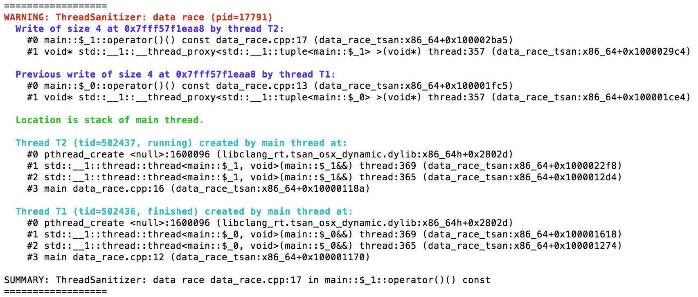

<!-- section:Title --> class: slide_title, no_number count: false # Testing and Verifying Multi-Threaded Software <hr width="25%"> <div class="author" style="margin-bottom: 0.25em;">Susanne van den Elsen</div> <div style="height: 60;"> <div class="author" style="width: 50%; margin-top: 0.15em; text-align: right; float: left;"> Software Developer @ </div> <div style="text-align: left; float: left;"> </div> </div> <br/><br/> <hr width="25%"> <div class="venue"> Women Who Code Berlin | November 21, 2017 </div> ??? Good afternoon and welcome everybody. My name is Susanne van den Elsen and I am a software developer at Native Instruments. At Native Instruments, we create software and hardware for digital music production. <!-- section:Challenges in Testing and Verifying Multi-Threaded Programs --> <!-- >>> Slide --> --- class: slide_section, no_number count: false layout: false # Challenges in Testing and Verifying Multi-Threaded Programs <!-- >>> Slide --> --- layout: true #### Challenges in Testing and Verifying Multi-Threaded Programs # Concurrency Bugs --- ??? In general, concurrency bugs arise from the fact that multiple threads are sharing the same resources. Well-known bugs include -- count: false ##### Deadlocks, Race Conditions, and ... -- count: false ##### Data Races ```cpp int x = 0; thread t1([&x]{ x = 1; }); thread t2([&x]{ x = 2; }); t1.join(); t2.join(); ``` ??? Data Races: Arise when two threads - access the same memory location; and - at least one of the accesses is a write; and - there is no mechanism in place to avoid the accesses from happening concurrently Since the C++11 memory model we can reason about memory accesses and dataraces are deemed undefined behaviour (so it is very important to make sure your programs are datarace free) BRIDGE ==>: <!-- TODO: memory errors, and ... --> Just like there are tools specifically tailored to detect for example typical memory-related errors, concurrency bugs ask for tools that specialize in detecting them. Luckily there are such tools available, the most well-known probably being ThreadSanitizer and Helgrind. <!-- >>> Slide --> --- layout: false #### Challenges in Testing and Verifying Multi-Threaded Programs # Concurrency Bug Detectors ```bash clang++ -fsanitize=thread -std=c++14 -g data_race.cpp -o data_race ./data_race ``` -- count: false  ??? Tools like ThreadSanitizer and Helgrind have been applied to large C++ programs and have successfully found concurrency errors in real software applications. If you're programming with threads, I highly encourage you to look into these tools if you haven't so already. What these tools rely on when detecting bugs is that the bug is detectable in the execution that they happended to monitor. However, as we'll see next, whether or not a potential bug in the program occurs depends heavily on the actual interleaving of the program's threads at runtime. <!-- >>> Slide --> --- layout: false #### Challenges in Testing and Verifying Multi-Threaded Programs # Dependence on Thread Interleaving <!-- >>> Slide --> --- class: split-47 .column[ ``` #define SIZE 2 class lock_free_queue { public: void push(const int job); int steal(); private: std::array<int, SIZE> m_data; std::atomic<size_t> m_head{ 0 }; std::atomic<size_t> m_tail{ 0 }; }; // ``` <img src='./images/queue1.png' width="500"/> ] -- count: false .column[ ```cpp void lock_free_queue::push(const int job) { const size_t tail = m_tail.load(); if (tail < m_head.load() + SIZE) { m_data[tail % SIZE] = job; m_tail.store(tail + 1); } } int lock_free_queue::steal() { size_t head = m_head.load(); if (head < m_tail.load()) { if (m_head.compare_exchange_strong(head, head + 1)) return m_data[head % SIZE]; } return -1; } // ``` ] <!-- >>> Slide --> --- class: split-47 .column[ ``` TEST() { lock_free_queue queue; std::thread worker([&queue]{ const auto job = queue.steal(); }); queue.push(0); queue.push(1); queue.push(2); worker.join(); } ``` <img src='./images/queue1.png' width="500"/> ] .column[ ```cpp void lock_free_queue::push(const int job) { const size_t tail = m_tail.load(); if (tail < m_head.load() + SIZE) { m_data[tail % SIZE] = job; m_tail.store(tail + 1); } } int lock_free_queue::steal() { size_t head = m_head.load(); if (head < m_tail.load()) { if (m_head.compare_exchange_strong(head, head + 1)) return m_data[head % SIZE]; } return -1; } // ``` ] <!-- >>> Slide --> --- <img src='./images/queue1.png' height="200"/> ```cpp // main worker *queue.push(0) { const size_t tail = m_tail.load(); if (tail < m_head.load() + SIZE) { m_data[tail % SIZE] = 0; m_tail.store(tail + 1); } } queue.push(1) { const size_t tail = m_tail.load(); if (tail < m_head.load() + SIZE) { m_data[tail % SIZE] = 1; m_tail.store(tail + 1); } } ... ``` --- count: false <img src='./images/queue2.png' height="200"/> ```cpp // main worker queue.push(0) { const size_t tail = m_tail.load(); if (tail < m_head.load() + SIZE) { * m_data[tail % SIZE] = 0; m_tail.store(tail + 1); } } queue.push(1) { const size_t tail = m_tail.load(); if (tail < m_head.load() + SIZE) { m_data[tail % SIZE] = 1; m_tail.store(tail + 1); } } ... ``` --- count: false <img src='./images/queue3.png' height="200"/> ```cpp // main worker queue.push(0) { const size_t tail = m_tail.load(); if (tail < m_head.load() + SIZE) { m_data[tail % SIZE] = 0; * m_tail.store(tail + 1); } } queue.push(1) { const size_t tail = m_tail.load(); if (tail < m_head.load() + SIZE) { m_data[tail % SIZE] = 1; m_tail.store(tail + 1); } } ... ``` --- count: false <img src='./images/queue3.png' height="200"/> ```cpp // main worker queue.push(0) { const size_t tail = m_tail.load(); if (tail < m_head.load() + SIZE) { m_data[tail % SIZE] = 0; m_tail.store(tail + 1); } } *queue.push(1) { const size_t tail = m_tail.load(); if (tail < m_head.load() + SIZE) { m_data[tail % SIZE] = 1; m_tail.store(tail + 1); } } ... ``` --- count: false <img src='./images/queue4.png' height="200"/> ```cpp // main worker queue.push(0) { const size_t tail = m_tail.load(); if (tail < m_head.load() + SIZE) { m_data[tail % SIZE] = 0; m_tail.store(tail + 1); } } queue.push(1) { const size_t tail = m_tail.load(); if (tail < m_head.load() + SIZE) { * m_data[tail % SIZE] = 1; m_tail.store(tail + 1); } } ... ``` --- count: false <img src='./images/queue5.png' height="200"/> ```cpp // main worker queue.push(0) { const size_t tail = m_tail.load(); if (tail < m_head.load() + SIZE) { m_data[tail % SIZE] = 0; m_tail.store(tail + 1); } } queue.push(1) { const size_t tail = m_tail.load(); if (tail < m_head.load() + SIZE) { m_data[tail % SIZE] = 1; * m_tail.store(tail + 1); } } ... ``` <!-- >>> Slide --> --- <img src='./images/queue5.png' height="200"/> ```cpp // main worker queue.push(0); queue.push(1); *queue.push(2) { const size_t tail = m_tail.load(); if (tail < m_head.load() + SIZE); } // ----------------------------------------------------------------------------------------------- queue.steal() { size_t head = m_head.load(); if (head < m_tail.load()) { if (m_head.compare_exchange_strong(head, head + 1)) { return m_data[head % SIZE]; } } } ``` --- count: false <img src='./images/queue5.png' height="200"/> ```cpp // main worker queue.push(0); queue.push(1); queue.push(2) { const size_t tail = m_tail.load(); if (tail < m_head.load() + SIZE); } // ----------------------------------------------------------------------------------------------- * queue.steal() { size_t head = m_head.load(); if (head < m_tail.load()) { if (m_head.compare_exchange_strong(head, head + 1)) { return m_data[head % SIZE]; } } } ``` --- count: false <img src='./images/queue6.png' height="200"/> ```cpp // main worker queue.push(0); queue.push(1); queue.push(2) { const size_t tail = m_tail.load(); if (tail < m_head.load() + SIZE); } // ----------------------------------------------------------------------------------------------- queue.steal() { size_t head = m_head.load(); if (head < m_tail.load()) { * if (m_head.compare_exchange_strong(head, head + 1)) { return m_data[head % SIZE]; } } } ``` --- count: false <img src='./images/queue6.png' height="200"/> ```cpp // main worker queue.push(0); queue.push(1); queue.push(2) { const size_t tail = m_tail.load(); if (tail < m_head.load() + SIZE); } // ----------------------------------------------------------------------------------------------- queue.steal() { size_t head = m_head.load(); if (head < m_tail.load()) { if (m_head.compare_exchange_strong(head, head + 1)) { * return m_data[head % SIZE]; } } } ``` <!-- >>> Slide --> --- <img src='./images/queue5.png' height="200"/> ```cpp // main worker queue.push(0); queue.push(1); *queue.push(2) { const size_t tail = m_tail.load(); // ----------------------------------------------------------------------------------------------- queue.steal() { size_t head = m_head.load(); if (head < m_tail.load()) { if (m_head.compare_exchange_strong(head, head + 1)) { // ----------------------------------------------------------------------------------------------- if (tail < m_head.load() + SIZE) { m_data[tail % SIZE] = 2; return m_data[head % SIZE]; // ``` --- count: false <img src='./images/queue5.png' height="200"/> ```cpp // main worker queue.push(0); queue.push(1); queue.push(2) { const size_t tail = m_tail.load(); // ----------------------------------------------------------------------------------------------- * queue.steal() { size_t head = m_head.load(); if (head < m_tail.load()) { if (m_head.compare_exchange_strong(head, head + 1)) { // ----------------------------------------------------------------------------------------------- if (tail < m_head.load() + SIZE) { m_data[tail % SIZE] = 2; return m_data[head % SIZE]; // ``` --- count: false <img src='./images/queue6.png' height="200"/> ```cpp // main worker queue.push(0); queue.push(1); queue.push(2) { const size_t tail = m_tail.load(); // ----------------------------------------------------------------------------------------------- queue.steal() { size_t head = m_head.load(); if (head < m_tail.load()) { * if (m_head.compare_exchange_strong(head, head + 1)) { // ----------------------------------------------------------------------------------------------- if (tail < m_head.load() + SIZE) { m_data[tail % SIZE] = 2; return m_data[head % SIZE]; // ``` --- count: false <img src='./images/queue6.png' height="200"/> ```cpp // main worker queue.push(0); queue.push(1); queue.push(2) { const size_t tail = m_tail.load(); // ----------------------------------------------------------------------------------------------- queue.steal() { size_t head = m_head.load(); if (head < m_tail.load()) { if (m_head.compare_exchange_strong(head, head + 1)) { // ----------------------------------------------------------------------------------------------- * if (tail < m_head.load() + SIZE) { m_data[tail % SIZE] = 2; return m_data[head % SIZE]; // ``` --- count: false <img src='./images/queue6.png' height="200"/> ```cpp // main worker queue.push(0); queue.push(1); queue.push(2) { const size_t tail = m_tail.load(); // ----------------------------------------------------------------------------------------------- queue.steal() { size_t head = m_head.load(); if (head < m_tail.load()) { if (m_head.compare_exchange_strong(head, head + 1)) { // ----------------------------------------------------------------------------------------------- if (tail < m_head.load() + SIZE) { * m_data[tail % SIZE] = 2; return m_data[head % SIZE]; // ``` ??? Whether or not the executing the unit test reveals the deadlock depends on the interleaving of the program's threads at runtime. This brings me to the second challenge for testing and verifying multi-threaded programs: From the viewpoint of the programmer, this interleaving is nondeterministic. <!-- subsection:Nondeterminism --> --- layout: true #### Challenges in Testing and Verifying Multi-Threaded Programs # Nondeterminism <!-- >>> Slide --> --- ??? The order in which threads get to execute is *not* under the programmer's control, it is under the control of the OS (or the VM's) scheduler. -- count: false ##### OS Scheduler Policy e.g. ??? The scheduler makes it scheduling decisions based on a scheduler policy, which may vary from OS to OS. The policy may prescribe, among other things: -- count: false - may threads be preempted? ??? - Whether or not executing threads may be preempted, that is, whether the scheduler may force a context-switch to another thread, even though the running thread still has instructions to execute. -- count: false - how are priorities assigned? ??? - If and how threads get assigned priorities The scheduling decisions are also highly dependent on the execution environment. Factors include: -- count: false ##### Execution Environment e.g. -- count: false - current CPU load ??? - CPU load: may have an effect on whether threads get preempted -- count: false - presence and priorities of other threads on the CPU ??? - Prios: A thread on a CPU with many high-priority threads may exerience a slow-down relative to other threads in the same process on a different CPU -- count: false - what's in the cache ??? - Cache: e.g. if one thread is slowed down by cache misses <!-- <<< --> --- layout: true #### Challenges in Testing and Verifying Multi-Threaded Programs # Implications of Nondeterminism <!-- >>> Slide --> --- ??? What are the implications of nondeterminism for testing and verification of multi-threaded programs? -- count: false ##### Bugs are hard to find: -- count: false - Some bugs only occur under very rare thread interleavings <!-- TODO: Approach of inducing bad schedules by forcing context-switches is not systematic! --> -- count: false - Interleavings are not happening uniformly at random ??? Even if you would know your program has 10 different possible interleavings, running your test 10 times would not guarantee that a buggy interleaving will occur. It would not even guarantee that you don't see the same interleaving even time. -- count: false - "Heisenbugs" seem to disappear when you try to find them ??? So-called Heisenbugs: debugging statements or instrumentation instruction in the code, may have a dramatic effect on the scheduling choices, and may render the erronous interleaving way less likely to occur. -- count: false ##### Bugs are hard to reproduce: - If buggy behavior is observed, the next execution may be under a different schedule ??? If you've been lucky enough to find the bug, the bug is typically very hard to reproduce. -- count: false ##### It's hard to know whether a bug is fixed: -- count: false - The bug may still exist on other interleavings -- count: false - The "fix" may have just made it less likely to occur ??? BRIDGE ==>: So, nondeterminism poses a serious challenge for testing and verifying multi-threaded programs. In the next part of the talk I am going to discuss Systematic Exploration, which is a technique to overcome exactly that challenge. <!-- section:Systematic Exploration --> <!-- >>> Slide --> --- class: slide_section, no_number count: false layout: false # Systematic Exploration ??? The main idea behind Systematic Exploration is to repeatedly execute the program under test, each time with a different schedule from a set of interesting schedules. Thereto, the exploration tool first has to gain control over the program's thread interleaving at runtime. In my tool, this is taken care of by the RecordReplay Library <!-- <<< --> <!-- >>> Slide --> --- background-image: url(./images/github.png) --- layout: true #### Systematic Exploration # RecordReplay library: Taking "Control" over the Scheduler --- <div class="mermaid" style="align: center; width: 60%; margin: 0px auto;"> graph TD sut[Souce Code] source_instr[Instrumented Source] scheduler[Scheduler Library] exe_instr[Instrumented Executable] sut --> |Instrumentation Pass| source_instr source_instr --> exe_instr scheduler --> exe_instr </div> ??? The RecordReplay library which has two components: - a Scheduler Library and - a LLVM compiler instrumentation pass instrumenting the input program's source code with calls to the Scheduler library. - The instrumented source code is then linked to the Scheduler Library into an instrumented executable --- <div class="mermaid" style="align: left; width: 50%; margin: 0px auto;"> graph LR schedule[0.0.0.1.1.0.2.2.0] exe_instr[Instrumented Executable] trace schedule --> exe_instr exe_instr --> trace </div> <div class="animation_no_shift_up" style="margin-top: -5em;"> .right[<img src='./generated_trees/trace.png' height="450"/>] </div> ??? The instrumented executable now takes as input a schedule and after execution dumps a trace of the execution. This trace is used by the Systematic Exploration algorithms implemented in the StateSpaceExplorer tool to compute the next schedules to run the instrumented executable under. Let's take a look at two algorithms implemented in the StateSpaceExplorer tool. <!-- <<< --> --- layout: true #### Systematic Exploration # Depth-First Exploration <!-- >>> Slide --> --- ```cpp depth_first_exploration(program) { for (schedule : possible_schedules(program)) { run(program, schedule); } } ``` ??? The first algorithm is a simple depth-first exploration. It simply explores all possible thread interleavings of the original input program. The set of possible interleavings is computed on-the-fly. The next slide illustrates this on the background_thread example I introduced earlier in the talk. <!-- <<< --> <!-- >>> Slide --> --- layout: true #### Systematic Exploration # Depth-First Exploration <span class="h_example">lock_free_queue.cpp</span> --- --- count: false <div class="animation_no_shift_up" style="margin-right: 3em; margin-top: -7em;"> .right[] </div> ??? - The exploration starts with a certain schedule, in this case a non-preemptive one that prioritizes threads in the order in which they were created. - The algorithm backtracks the currnet trace until it finds a node where it can branch by scheduling another thread. - It creates a new schedule by taking the schedule up to that node, and appending the next thread's id to it. --- count: false <div class="animation_no_shift_up" style="margin-right: 3em; margin-top: -7em;"> .right[] </div> --- count: false <div class="animation_no_shift_up" style="margin-right: 3em; margin-top: -7em;"> .right[] </div> <!-- >>> Slide --> --- count: false .center[<img src='./generated_trees/background_thread.cpp/depth_first_search/trees/full_schedules_small.png' width="1100"/>] ??? This process continues, until eventually it reaches the root node of the tree again and all enabled threads have been scheduled from that root. This algorithm is very straightforward and, because it executes the program under all possible thread interleavings is guaranteed to find concurrency bugs if they are present. However: it suffers from a *major* problem: combinatorial explosion! The number of thread interleavings is exponential in the size of the program. For the relatively small background_thread program the search tree is still managable, but for real-world applications with many threads and many instructions, Depth First Search simply doesn't scale. The solution is to prune the tree of schedules considered by depth-first exploration and only explore a subset of the possible thread interleavings of an input program. <!-- <<< --> <!-- >>> Slide --> --- layout: true #### Systematic Exploration # Prune the State Space --- ##### Challenge Explore a subset of the possbile interleavings, but still provide coverage guarantees ??? The challenge is to choose that subset so carefully that coverage guarantees can still be provided. StateSpaceExplorer implements several state space pruning algorithms, each providing different coverage guarantees. <!-- >>> Slide --> --- count: false layout: false class: slide_section, no_number # Thank you! <!-- <<< --> --- layout: true # References <!-- >>> Slide --> --- count: false class: no_number ### Tools <span class="h_link">StateSpaceExplorer:</span> https://github.com/s-vde/state-space-explorer <span class="h_link">Helgrind:</span> http://valgrind.org/docs/manual/hg-manual.html <span class="h_link">ThreadSanitizer:</span> https://github.com/google/sanitizers/wiki <br/><br/> <span class="h_link">CHESS:</span> https://chesstool.codeplex.com <span class="h_link">Concuerror:</span> http://concuerror.com <span class="h_link">Maple:</span> https://github.com/jieyu/maple <!-- <<< --> <!-- >>> Slide --> --- count: false class: no_number ### Selected Literature C. Flanagan and P. Godefroid (2005), *Dynamic Partial-Order Reduction for Model Checking Software*, In: POPL' 05, pages 110-121 <br class="br_link" /> https://dl.acm.org/citation.cfm?id=1040315 P. Godefroid (1997), *Model Checking for Programming Languages using VeriSoft*, InL POPL'97, pages 174-186 <br class="br_link" /> https://dl.acm.org/citation.cfm?id=263717&CFID=824726696&CFTOKEN=68367255 M. Musuvathi and S. Qadeer (2007), *Iterative Context Bounding for Systematic Testing of Multithreaded Programs*, In: PLDI' 07, pages 446-455 <br class="br_link" /> https://dl.acm.org/citation.cfm?id=1040315 M. Musuvathi et al. (2008), *Finding and Reproducing Heisenbugs in Concurrent Programs*, In OSDI'08, pages 267-280 <br class="br_link" /> https://dl.acm.org/citation.cfm?id=1855760 <!-- <<< --> <!-- ////////// -->